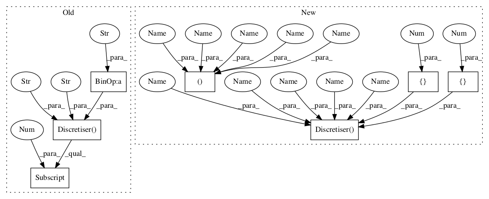

Pattern ID :316

Before Change
def test_instances_attributes_and_options_are_extracted_from_strings(self):
path = datasetsDir(self) + "numerical" + SEP + "person"
disc = discretise.Discretiser(path, path + ".test," + path + "extra.test", "0,1,4,5,6,7", "2,3,2,3,4,2")
self.assertEqual(6, len(disc.training))
self.assertEqual(2, len(disc.instances))
self.assertEqual(ins.TestInstances, disc.instances[0].__class__)
self.assertEqual(ins.TestInstances, disc.instances[1].__class__)
self.assertEqual([0, 1, 4, 5, 6, 7], disc.attribute_indices)
self.assertEqual([2, 3, 2, 3, 4, 2], disc.options)
After Change
def test_instances_attributes_and_options_are_extracted_from_strings(self):
path = datasetsDir(self) + "numerical" + SEP + "person"
training, attributes, klass, test, gold = self.get_instances(path, True, False)
disc = discretise.Discretiser(training, attributes, klass, test, gold, [0,1,4,5,6,7], [2,3,2,3,4,2])
self.assertEqual(6, len(disc.training))
self.assertEqual(2, len(disc.test))
self.assertEqual([0, 1, 4, 5, 6, 7], disc.attribute_indices)
self.assertEqual([2, 3, 2, 3, 4, 2], disc.options)
In pattern: SUPERPATTERN
Frequency: 3
Non-data size: 7
Instances
Fragment ID: 1058170
Project Name: nltk/nltk
Commit Name: 1c706ce32b55a6f8ee1069d38d61e68ecd34851d
Time: 2007-05-06
Author: sumukh.ghodke@gmail.com
File Name: nltk_lite/contrib/classifier_tests/discretisetests.py
Class Name: DiscretiseTestCase
Method Name: test_instances_attributes_and_options_are_extracted_from_strings
Fragment ID: 1058192
Project Name: nltk/nltk
Commit Name: 1c706ce32b55a6f8ee1069d38d61e68ecd34851d
Time: 2007-05-06
Author: sumukh.ghodke@gmail.com
File Name: nltk_lite/contrib/classifier_tests/discretisetests.py
Class Name: DiscretiseTestCase
Method Name: test_unsupervised_equal_width_discretisation
Fragment ID: 1058171
Project Name: nltk/nltk
Commit Name: 1c706ce32b55a6f8ee1069d38d61e68ecd34851d
Time: 2007-05-06
Author: sumukh.ghodke@gmail.com
File Name: nltk_lite/contrib/classifier_tests/discretisetests.py
Class Name: DiscretiseTestCase
Method Name: test_instances_attributes_and_options_are_extracted_from_strings
Fragment ID: 1058235
Project Name: nltk/nltk
Commit Name: 1c706ce32b55a6f8ee1069d38d61e68ecd34851d
Time: 2007-05-06
Author: sumukh.ghodke@gmail.com
File Name: nltk_lite/contrib/classifier_tests/discretisetests.py
Class Name: DiscretiseTestCase
Method Name: test_unsupervised_equal_frequency